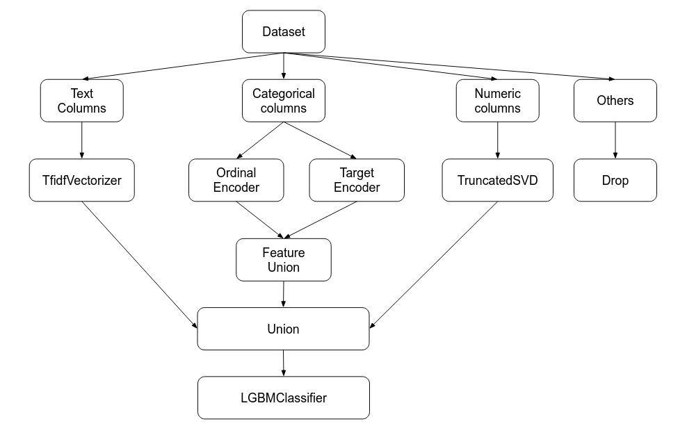

from pandas_profiling import ProfileReport
profile = ProfileReport(dataframe)One of the most important challenge when working with tabular dataset before feeding into the machine learning model is preprocessing data because the quality of data and the useful information that can be derived from it directly affects the ability of model to learn. In the real world application, the raw dataset is kind of messy which needs some skills to clean it.
This blog will cover some tricks that I found quite useful when dealing with messy data.
Pandas tricks
Most of the time when doing tabular dataset we will usually import data into dataframe of pandas. Knowing how to deal with pandas will save us a lot of time of computation with better code readability and versatility.
Pandas Profile for data exploration
Pandas profiling is an open source Python module with which we can quickly do an exploratory data analysis with just a few lines of code.

Configure Options & Settings
We usually have to work with a dataframe containing many columns which will collape when reading it. If we want to read all columns of dataframe, we can configure its options at interpreter startup.
pd.options.display.max_columns = 500
#or
pd.set_option('display.max_columns', 500)Split a column into multiple columns
Some dataframe columns contain concatenation of data which should be splitted into multiple columns
df = pd.DataFrame({'Name_Age': ['Smith_32', 'Nadal',
'Federer_36']})df| Name_Age | |
|---|---|
| 0 | Smith_32 |
| 1 | Nadal |
| 2 | Federer_36 |
df['Name_Age'].str.split('_', expand=True)| 0 | 1 | |
|---|---|---|
| 0 | Smith | 32 |
| 1 | Nadal | None |
| 2 | Federer | 36 |
If we want to take only first column of our splits:
df['Name_Age'].str.split('_').str[1]0 32
1 NaN
2 36
Name: Name_Age, dtype: objectExtract dummy variables from string columns
df = pd.Series(['Sector 1;Sector 2', 'Sector 1;Sector 3', np.nan, 'Sector 2;Sector 4'], dtype=str)df0 Sector 1;Sector 2
1 Sector 1;Sector 3
2 NaN
3 Sector 2;Sector 4
dtype: objectdf.str.get_dummies(';')| Sector 1 | Sector 2 | Sector 3 | Sector 4 | |
|---|---|---|---|---|
| 0 | 1 | 1 | 0 | 0 |
| 1 | 1 | 0 | 1 | 0 |
| 2 | 0 | 0 | 0 | 0 |
| 3 | 0 | 1 | 0 | 1 |
Regular expression with text
df = pd.DataFrame({'Location' : [
'Washington, D.C. 20003',
'Brooklyn, NY 11211-1755',
'Omaha, NE 68154',
'Pittsburgh, PA 15211'
]})df| Location | |
|---|---|
| 0 | Washington, D.C. 20003 |
| 1 | Brooklyn, NY 11211-1755 |
| 2 | Omaha, NE 68154 |
| 3 | Pittsburgh, PA 15211 |
If we want to separate out the three city/state/ZIP components neatly into DataFrame fields, we should pass regex extraction into .str.extract:
regex = (r'(?P<city>[A-Za-z ]+), ' # One or more letters
r'(?P<state>[A-Z]{2}) ' # 2 capital letters
r'(?P<zip>\d{5}(?:-\d{4})?)') # Optional 4-digit extensiondf['Location'].str.replace('.', '').str.extract(regex)| city | state | zip | |
|---|---|---|---|
| 0 | Washington | DC | 20003 |
| 1 | Brooklyn | NY | 11211-1755 |
| 2 | Omaha | NE | 68154 |
| 3 | Pittsburgh | PA | 15211 |
Note:
.stris called accessor for string (object) data. It maps to the class StringMethods which contains a lot of methods likecat,split,rsplit,replace,extract…
Enhance performance with Cython
We usually use the lambda function to apply for each row in dataframe. Sometimes, it is not efficient in term of computation time. Actually we can boost the performance by using Cython extention.
df = pd.DataFrame({'a': np.random.randn(1000),
'b': np.random.randn(1000),
'N': np.random.randint(100, 1000, (1000)),
'x': 'x'})def f(x):
return x * (x - 1)
def integrate_f(a, b, N):
s = 0
dx = (b - a) / N
for i in range(N):
s += f(a + i * dx)
return s * dx%timeit df.apply(lambda x: integrate_f(x['a'], x['b'], x['N']), axis=1)167 ms ± 1.58 ms per loop (mean ± std. dev. of 7 runs, 10 loops each)Now we will pass the lambda function into Cython extension.
%load_ext CythonThe Cython extension is already loaded. To reload it, use:
%reload_ext Cython%%cython
def f(x):
return x * (x - 1)
def integrate_f(a, b, N):
s = 0
dx = (b - a) / N
for i in range(N):
s += f(a + i * dx)
return s * dx%timeit df.apply(lambda x: integrate_f(x['a'], x['b'], x['N']), axis=1)120 ms ± 777 µs per loop (mean ± std. dev. of 7 runs, 10 loops each)By simply putting cython extension before the lambda function, we reduce a significant amount of computation time
Groupby
Groupby is one of the powerful methods which allows us to split the data into groups based on some criteria, compute statistic aggregation on each group or do transformation like standalizing the data within a group and many more.
data = {'Team': ['Riders', 'Riders', 'Devils', 'Devils', 'Kings',
'kings', 'Kings', 'Kings', 'Riders', 'Royals', 'Royals', 'Riders'],
'Rank': [1, 2, 2, 3, 3,4 ,1 ,1,2 , 4,1,2],
'Year': [2014,2015,2014,2015,2014,2015,2016,2017,2016,2014,2015,2017],
'Points':[876,789,863,673,741,812,756,788,694,701,804,690]}
df = pd.DataFrame(data)df| Team | Rank | Year | Points | |
|---|---|---|---|---|
| 0 | Riders | 1 | 2014 | 876 |
| 1 | Riders | 2 | 2015 | 789 |
| 2 | Devils | 2 | 2014 | 863 |
| 3 | Devils | 3 | 2015 | 673 |
| 4 | Kings | 3 | 2014 | 741 |
| 5 | kings | 4 | 2015 | 812 |
| 6 | Kings | 1 | 2016 | 756 |
| 7 | Kings | 1 | 2017 | 788 |
| 8 | Riders | 2 | 2016 | 694 |
| 9 | Royals | 4 | 2014 | 701 |
| 10 | Royals | 1 | 2015 | 804 |
| 11 | Riders | 2 | 2017 | 690 |
df.groupby('Year')['Points'].agg(['mean', 'sum', 'min', 'max', 'std', 'var', 'count'])| mean | sum | min | max | std | var | count | |
|---|---|---|---|---|---|---|---|
| Year | |||||||
| 2014 | 795.25 | 3181 | 701 | 876 | 87.439026 | 7645.583333 | 4 |
| 2015 | 769.50 | 3078 | 673 | 812 | 65.035888 | 4229.666667 | 4 |
| 2016 | 725.00 | 1450 | 694 | 756 | 43.840620 | 1922.000000 | 2 |
| 2017 | 739.00 | 1478 | 690 | 788 | 69.296465 | 4802.000000 | 2 |
We can also aggregate using the numpy function like np.size, np.mean, np.max…
df.groupby('Team').agg(np.size)| Rank | Year | Points | |
|---|---|---|---|
| Team | |||
| Devils | 2 | 2 | 2 |
| Kings | 3 | 3 | 3 |
| Riders | 4 | 4 | 4 |
| Royals | 2 | 2 | 2 |
| kings | 1 | 1 | 1 |
df.groupby('Team').transform(lambda x: (x - x.mean()) / x.std()*10)| Rank | Year | Points | |
|---|---|---|---|
| 0 | -15.000000 | -11.618950 | 12.843272 |
| 1 | 5.000000 | -3.872983 | 3.020286 |
| 2 | -7.071068 | -7.071068 | 7.071068 |
| 3 | 7.071068 | 7.071068 | -7.071068 |
| 4 | 11.547005 | -10.910895 | -8.608621 |
| 5 | NaN | NaN | NaN |
| 6 | -5.773503 | 2.182179 | -2.360428 |
| 7 | -5.773503 | 8.728716 | 10.969049 |
| 8 | 5.000000 | 3.872983 | -7.705963 |
| 9 | 7.071068 | -7.071068 | -7.071068 |
| 10 | -7.071068 | 7.071068 | 7.071068 |
| 11 | 5.000000 | 11.618950 | -8.157595 |
df.groupby('Team').filter(lambda x: len(x) >= 3)| Team | Rank | Year | Points | |
|---|---|---|---|---|
| 0 | Riders | 1 | 2014 | 876 |
| 1 | Riders | 2 | 2015 | 789 |
| 4 | Kings | 3 | 2014 | 741 |
| 6 | Kings | 1 | 2016 | 756 |
| 7 | Kings | 1 | 2017 | 788 |
| 8 | Riders | 2 | 2016 | 694 |
| 11 | Riders | 2 | 2017 | 690 |
Sklearn pipeline
One of the most beautiful things I love about sklearn is its creation of pipeline. I found it very neat to use, easily for understanding and particularly very helpful for production.
>Note: Definition of **pipeline** class according to scikit-learn:
Sequentially apply a list of transforms and a final estimator. Intermediate steps of pipeline must implement fit and transform methods and the final estimator only needs to implement fit. pipeline = Pipeline([('preprocessing', ColumnTransformer(
transformers = [
('text', Pipeline([
('tfidf', TfidfVectorizer(stop_words=['nan'])),
]), TEXT_COLUMNS),
('cat',
FeatureUnion([
('ordinal', OrdinalEncoder()),
('target_encoder', TargetEncoder())
]), CAT_COLUMNS),
('num', TruncatedSVD(n_components=100) ,
NUM_COLUMNS)
],
remainder='drop')
),
('model', LGBMClassifier()
)
])
pipeline.fit(Xtrain, y_train)Looking at the pipeline allows to understand right away what we want to do with our data. The example above can be interpreted as the schema below:

We can also pass the whole pipeline into other pipeline like RandomizedSearchCV or GridSearchCV
params_grid = {
'model__colsample_bytree': [0.3, 0.5, 0.7, 0.9],
'model__n_estimators' : [2000, 5000, 8000],
'model__learning_rate': [0.01, 0.02, 0.05, 0.1, 0.2],
'model__max_depth' : [3, 5, 7],
'preprocessing__num__n_components' : [100, 50, 70],
'preprocessing__text__select__estimator__C' : [1e-2, 1e-1, 1],
'preprocessing__text__select__max_features' : [10, 20, 50, None],
'preprocessing__text__tfidf__binary' : [False, True],
'preprocessing__text__tfidf__ngram_range' : [(1, 1), (1, 2)],
'preprocessing__text__tfidf__max_df': [0.2, 0.4, 0.6],
'preprocessing__text__tfidf__min_df': [20, 50]
}search = RandomizedSearchCV(estimator=pipeline,
param_distributions=params_grid,
n_iter=100,
n_jobs=1,
cv = 5,
verbose=5,
scoring='roc_auc')
search.fit(Xtrain, y_train)Reference
- https://pandas.pydata.org/pandas-docs/stable/user_guide/
- https://realpython.com/pandas-groupby/